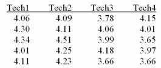
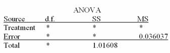
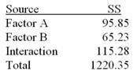

Variances
Means
Proportions
Only two parameters
None of the above
There is no statistical evidence that any population mean is different from any other
No two population means are equal
No two variances are equal
The null hypothesis should be accepted
There is strong statistical evidence that not all the population means are equal
1.70
2.53
2.064
1.96
1.645
3.58
3.90
3.96
4.64
5.02


H0: mTECH1 = mTECH2 = mTECH3 = mTECH4
H0: mTECH1 ≠ mTECH2 ≠ mTECH3 ≠ mTECH4
H0: mTECH1 ≤ mTECH2 ≤ mTECH3 ≤ mTECH4
H0: mTECH1 > mTECH2 > mTECH3 > mTECH4
H0: mTECH1 ≥ mTECH2 ≥ mTECH3 ≥ mTECH4
20
19
16
4 in the numerator, 15 in the denominator
3 in the numerator, 16 in the denominator
T = 3.18
T = 2.09
F = 3.24
c2 = 9.07
F = 8.69
T = 3.62
T = 2.91
F = 2.34
F = 4.06
Reject H0; there are differences in means across the workstations
Fail to reject H0: there are no differences in means across the workstations
Reject H1: there are differences in means across observations
Fail to reject H1: there are no differences in means across observations
Both A and C and appropriate
Type I error rate; Type II error rate
Type II error rate; Type I error rate
Type I error rate; power
Power; Type II error rate
Interaction; power

Factor A but not B
Factor B but not A
Both A and B
Neither A nor B
Can't be answered without more information
Factor A has no effect on variation in the dependent variable
Factor B has no effect on variation in the dependent variable
The interaction between Factor A and Factor B has no effect on variation in the dependent variable
The interaction between Factor A and Factor B has a significant effect on variation in the dependent variable
This is the end of the test. When you have completed all the questions and reviewed your answers, press the button below to grade the test.